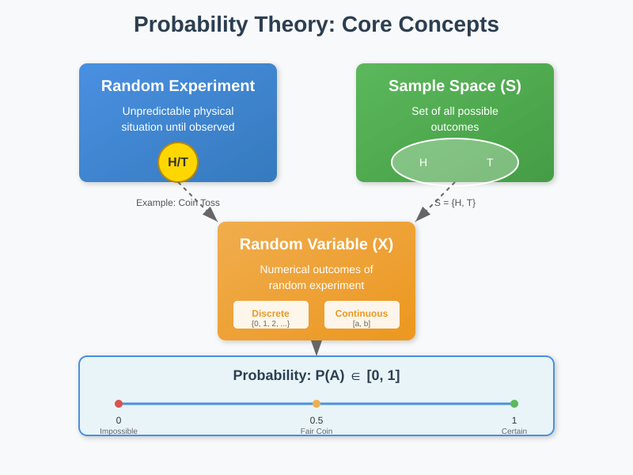
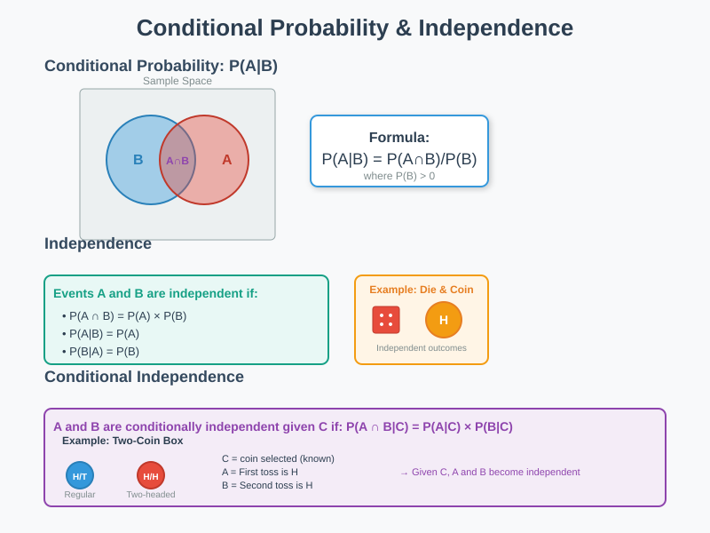
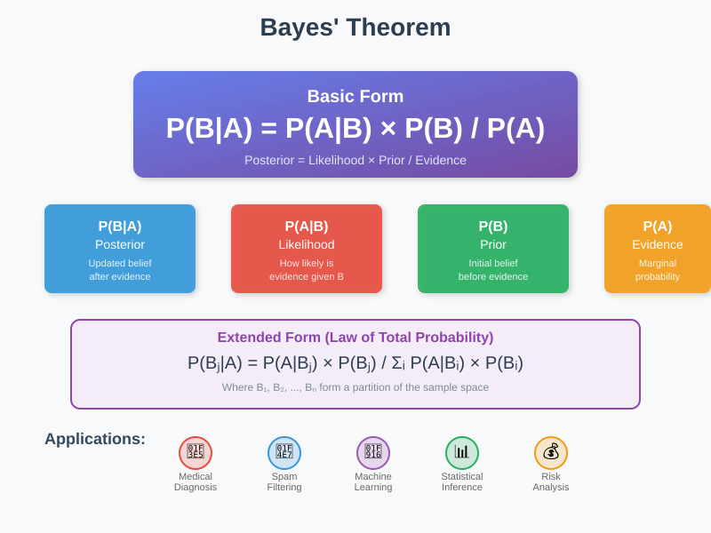
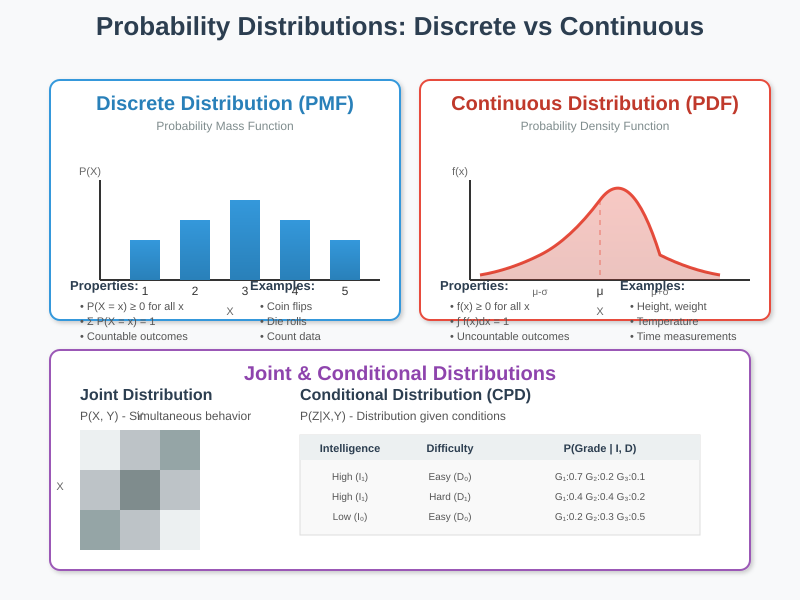
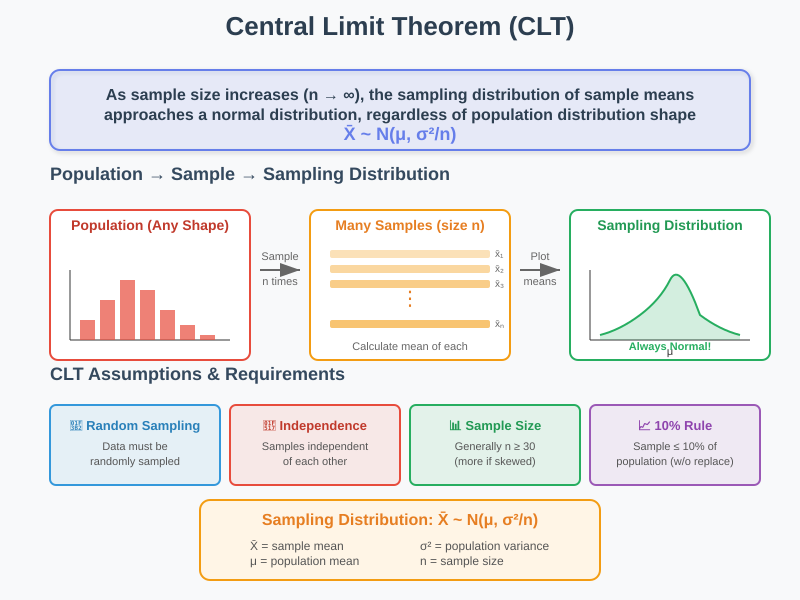
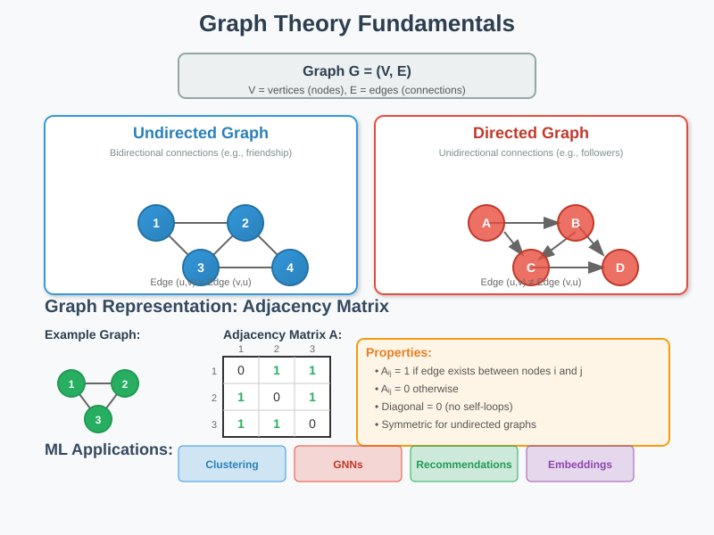
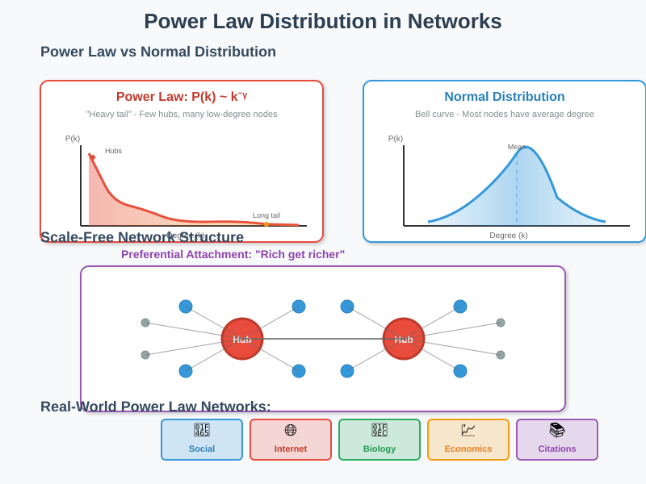

Networking and Graphical Models
📚 Quick Navigation
- Prerequisites
- Probability Theory
- Conditional Probability & Independence
- Bayes Theorem
- Statistical Concepts
- Central Limit Theorem
- Graph Theory Basics
- Power Law Distribution
- References & Further Reading
Prerequisites
This module requires understanding of Bayes theorem and probability distributions. Review the Statistics for Data Science module from Foundations of Data Science course if needed.
Probability Theory
Fundamental Concepts

Random Experiment:
A physical situation whose outcome cannot be predicted until observed.
Key Components:
- Outcome: A result of a random experiment (e.g., getting "Heads" when tossing a coin)
- Sample Space: Set of all possible outcomes of a random experiment
- Random Variable: A variable whose possible values are numerical outcomes of a random experiment
Types of Random Variables
Discrete Random Variable:
- Takes only countable number of distinct values (0, 1, 2, 3, ...)
- Usually represents counts
- Example: Number of heads in 10 coin tosses
Continuous Random Variable:
- Takes infinite number of possible values
- Usually represents measurements
- Example: Height, weight, temperature
Probability Definition
Probability Measure:
The likelihood that an event will occur in a random experiment, quantified as a number between 0 and 1.
Properties:
- 0 indicates: Impossibility
- 1 indicates: Certainty
- Higher probability: More likely the event will occur
Example:
For a fair coin toss:
P(Heads) = P(Tails) = 1/2 = 0.5 = 50%
Conditional Probability & Independence
Conditional Probability

Definition:
The probability of event A given that event B has occurred, written as P(A|B).
Formula:
P(A|B) = P(A ∩ B) / P(B)
Where P(B) > 0
Independence
Two Events are Independent if:
P(A ∩ B) = P(A) × P(B)
P(A|B) = P(A)
P(B|A) = P(B)
Example:
Rolling a die and flipping a coin are independent events - the die result doesn't affect the coin outcome.
Conditional Independence
Definition:
Events A and B are conditionally independent given C if:
P(A ∩ B|C) = P(A|C) × P(B|C)
Two-Coin Example:
- Setup: Box contains regular coin and two-headed coin
- Events:
- A = First toss is Heads
- B = Second toss is Heads
- C = Regular coin selected
- Result: Given C (knowing which coin), A and B become independent
Bayes Theorem

Basic Form
Bayes' Rule:
P(B|A) = P(A|B) × P(B) / P(A)
Components:
- P(B|A): Posterior probability
- P(A|B): Likelihood
- P(B): Prior probability
- P(A): Marginal probability
Extended Form with Partitions
Law of Total Probability Version:
P(Bⱼ|A) = P(A|Bⱼ) × P(Bⱼ) / Σᵢ P(A|Bᵢ) × P(Bᵢ)
Where B₁, B₂, ..., Bₙ form a partition of the sample space.
Applications:
- Medical diagnosis
- Spam filtering
- Machine learning classification
- Statistical inference
Statistical Concepts
Expectation
Definition:
The expected value E(X) is the average outcome if an experiment is repeated many times.
Discrete Random Variable:
E(X) = Σ x × P(X = x)
Continuous Random Variable:
E(X) = ∫ x × f(x) dx
Example - Fair Die:
E(X) = 1×(1/6) + 2×(1/6) + 3×(1/6) + 4×(1/6) + 5×(1/6) + 6×(1/6) = 3.5
Probability Distributions

Discrete Probability Distribution (PMF):
Properties for probability mass function p(x):
- Non-negative: p(x) ≥ 0 for all x
- Sums to 1: Σ p(x) = 1
- Probability: P(X = x) = p(x)
Continuous Probability Distribution (PDF):
Properties for probability density function f(x):
- Non-negative: f(x) ≥ 0 for all x
- Integrates to 1: ∫ f(x) dx = 1
- Probability: P(a ≤ X ≤ b) = ∫ᵇₐ f(x) dx
Joint and Conditional Distributions
Joint Probability Distribution:
For random variables X and Y:
F(x,y) = P(X ≤ x, Y ≤ y)
Conditional Probability Distribution (CPD):
Distribution of Z given X and Y:
P(Z|X, Y)
Student Grade Example:
- Variables:
- Intelligence: I₀ (low), I₁ (high)
- Difficulty: D₀ (easy), D₁ (difficult)
- Grade: G₁ (best), G₂ (middle), G₃ (worst)
- CPD: P(Grade | Intelligence, Difficulty)
Central Limit Theorem

Statement
The CLT states:
As sample size increases (n > 30), the sampling distribution of sample means approaches a normal distribution, regardless of the population distribution shape.
X̄ ~ N(μ, σ²/n)
Where:
- X̄: Sample mean
- μ: Population mean
- σ²: Population variance
- n: Sample size
CLT Assumptions
Required Conditions:
- Randomization: Data must be sampled randomly
- Independence: Samples should be independent of each other
- Sample Size Limit: Sample ≤ 10% of population (without replacement)
- Sufficient Size: Generally n ≥ 30 for symmetric populations
Sample Size Guidelines:
- Symmetric population: Small samples acceptable
- Skewed population: Larger samples required (n ≥ 30)
- Heavy-tailed distribution: Even larger samples needed
Graph Theory Basics

Graph Definition
Mathematical Representation:
G = (V, E)
Where:
- V: Set of vertices (nodes)
- E: Set of edges (connections)
Graph Types
Undirected Graph:
- Bidirectional paths between nodes
- Edge (u, v) = Edge (v, u)
- Example: Social friendship networks
Directed Graph:
- Unidirectional paths between nodes
- Edge (u, v) ≠ Edge (v, u)
- Example: Twitter follower networks
Graph Representation
Adjacency Matrix:
For a graph with n nodes, create an n×n matrix A where:
Aᵢⱼ = 1 if edge exists between nodes i and j
Aᵢⱼ = 0 otherwise
Properties:
- Square matrix: Always n×n
- Diagonal zeros: No self-loops (Aᵢᵢ = 0)
- Symmetric: For undirected graphs (Aᵢⱼ = Aⱼᵢ)
- Asymmetric: For directed graphs
Example - 3-Node Undirected Graph:
[0 1 1]
A = [1 0 1]
[1 1 0]
Applications in Machine Learning
Common Uses:
- Clustering: Community detection
- Classification: Graph neural networks
- Regression: Graph-based regularization
- Recommendation: Collaborative filtering
- Feature Engineering: Graph embeddings
Power Law Distribution

Degree Distribution
Node Degree:
The number of connections a node has to other nodes in a network.
Degree Distribution:
The probability distribution of degrees over the entire network.
Scale-Free Networks
Characteristics:
- Few highly connected hubs: Small number of nodes with many connections
- Many poorly connected nodes: Large number of nodes with few connections
- Power law degree distribution: P(k) ~ k⁻ᵞ
- Scale invariance: Network structure independent of size
Power Law Properties
Mathematical Form:
P(k) ~ k⁻ᵞ
Where:
- P(k): Probability of a node having k connections
- k: Number of connections (degree)
- γ: Power law exponent (typically 2 < γ < 3)
Key Differences from Normal Distribution:
- Heavy tail: Higher probability of extreme values
- No characteristic scale: No typical node degree
- Preferential attachment: Rich-get-richer phenomenon
Real-World Examples
Networks Following Power Law:
- Social Networks: Twitter followers, Facebook friends
- Internet: Web page links, router connections
- Biological Networks: Protein interactions, metabolic networks
- Economic Networks: Wealth distribution, company sizes
- Citation Networks: Paper citations, patent references
Preferential Attachment Hypothesis:
"It is attractive to be connected to people who are already highly connected."
This mechanism naturally leads to power law distributions in growing networks.
References & Further Reading
📖 Foundational Texts:
- Pattern Recognition and Machine Learning - Christopher Bishop
- The Elements of Statistical Learning - Hastie, Tibshirani, Friedman
- Probabilistic Graphical Models - Daphne Koller & Nir Friedman
- Networks: An Introduction - Mark Newman
🔗 Online Resources:
- MIT OpenCourseWare: Probabilistic Systems Analysis
- Stanford CS228: Probabilistic Graphical Models
- NetworkX Documentation
- Seeing Theory: Visual Introduction to Probability
📄 Research Papers:
- Barabási & Albert (1999): Emergence of Scaling in Random Networks
- Newman (2003): The Structure and Function of Complex Networks
🚀 Interactive Tools: